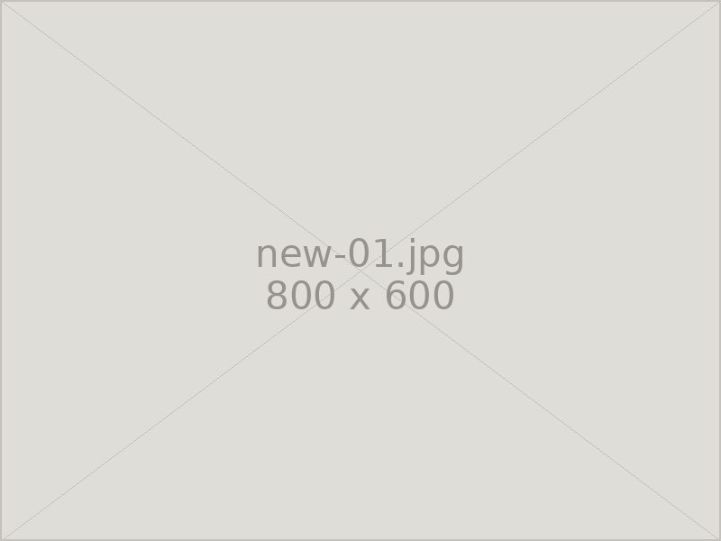
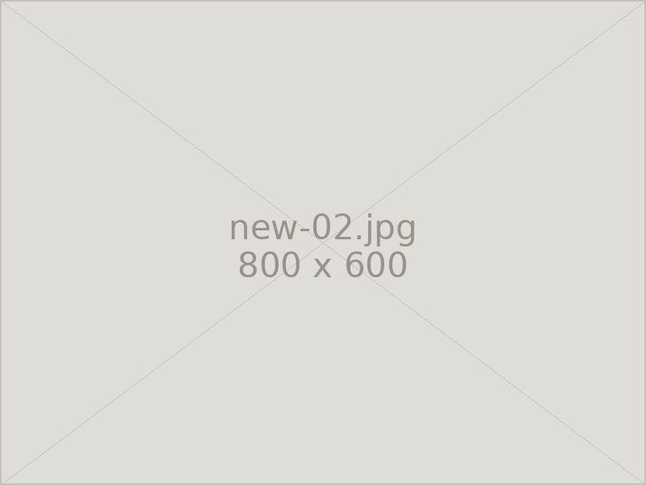
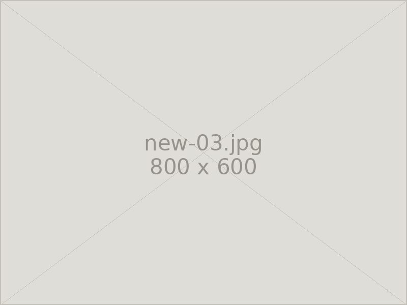
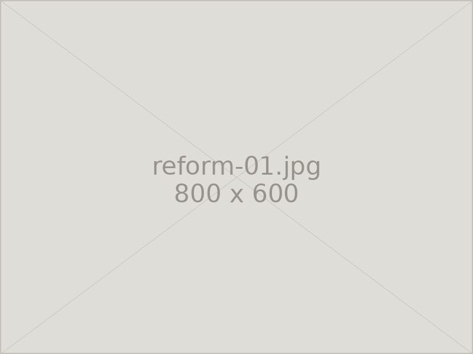
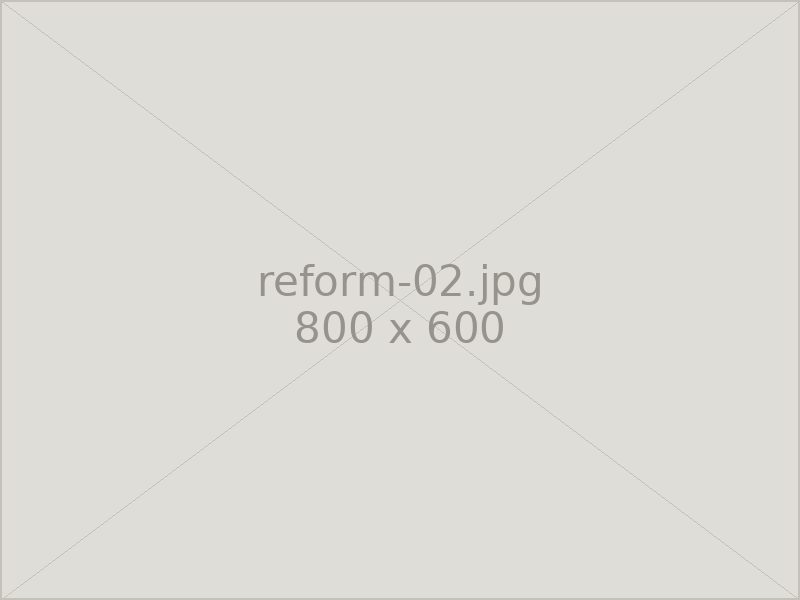
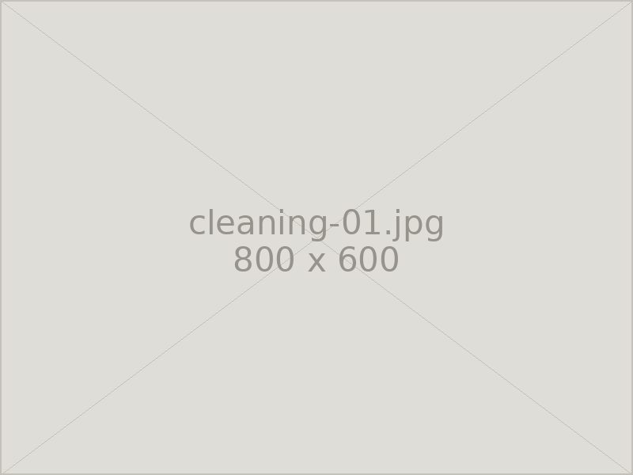
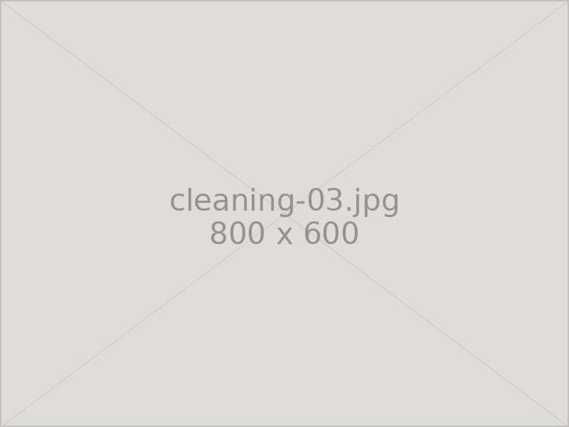

Works
施工例
これまでの実績を写真でご覧いただけます。新規建立・リフォーム・クリーニングの3つのカテゴリでご紹介します。
新規建立
ご家族のお考えをうかがいながら、形・石・彫る文字を一つひとつ決めてお作りしたお墓です。



リフォーム
傷んだ部分を交換・修繕し、建て替えずに美しさを取り戻した例です。


クリーニング
石を傷めない方法で洗浄し、本来の艶を取り戻した例です。


※ 掲載している施工例は、お客様のご了承をいただいたものです。
Contact
お気軽にご相談ください
お見積り・ご相談は無料です。まずはお電話でお聞かせください。
営業時間 8:00〜17:00 ／ 定休日 毎月14・15日、土日
FAX 03-3333-8452